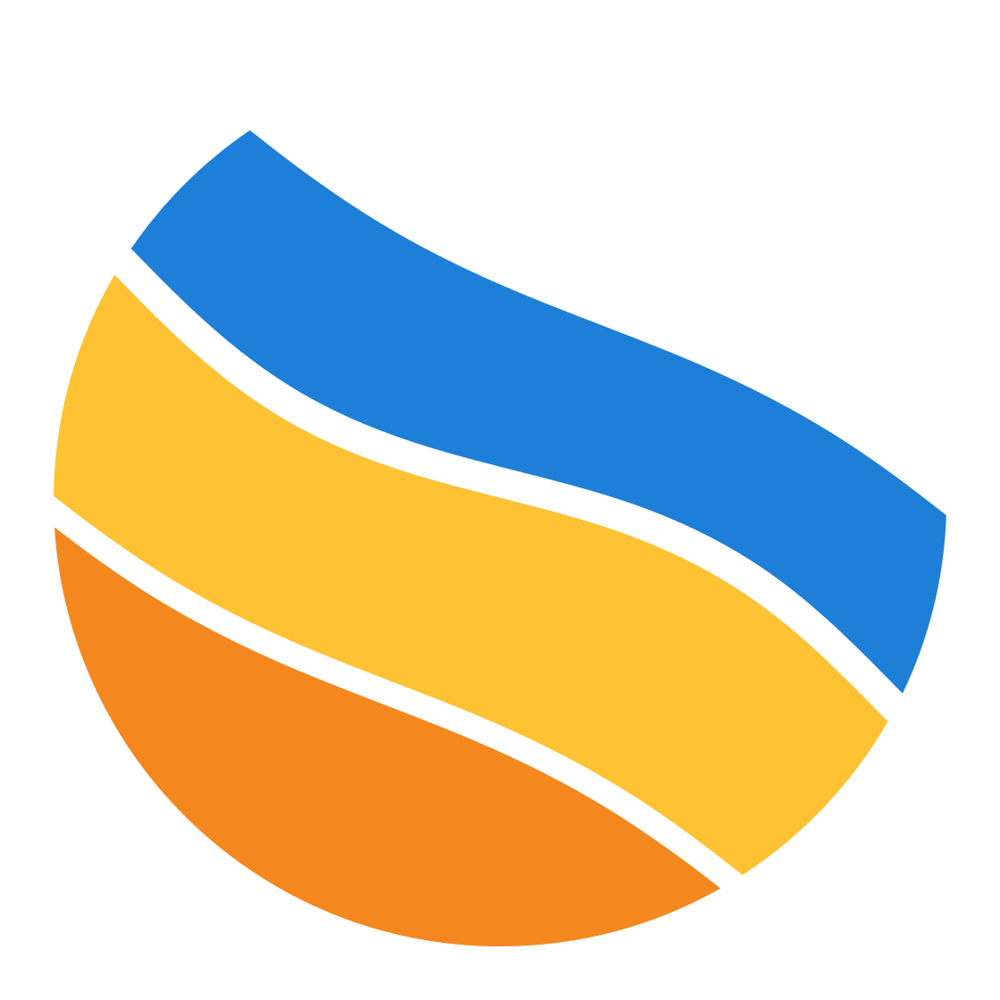
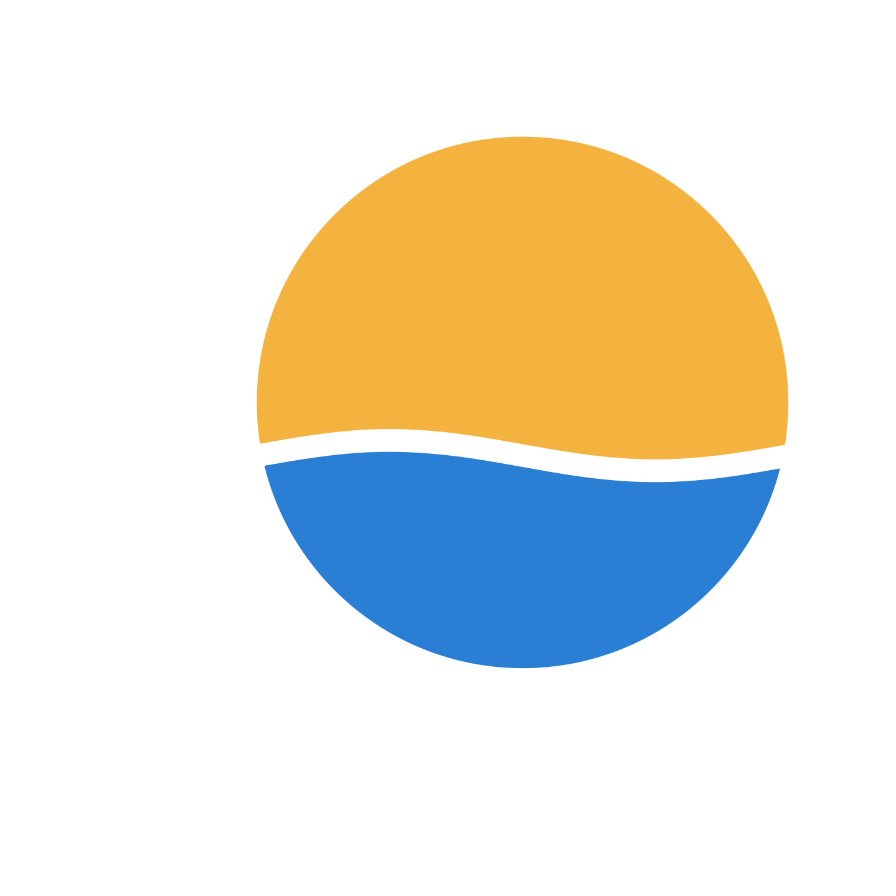
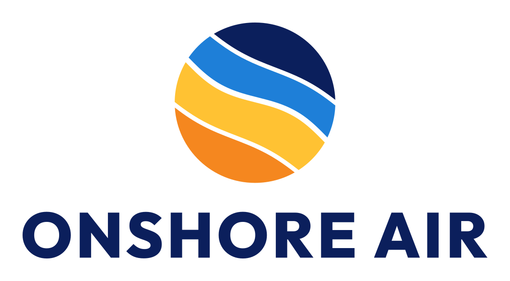

Onshore Air
Three logo concepts for the Sunshine Coast's air-conditioning specialists. Each keeps the sun-meets-sea idea Luke already owns, rebuilt as a modern logo system that holds up on a 6 m van and at 16 px in a browser tab.



Hot outside, cool inside. Told once, simply.
Blue owns Australian air conditioning: 13 of the 15 brands we audited lead with blue. Red is the OEM accent, and local installers default to snowflakes, swooshes and the same stock fonts. Nobody owns the coastal warm-to-cool story, and Onshore Air's sun-meets-sea sphere already tells it.
The job is to keep that idea and make it professional: flat shapes, a confident name in a strong typeface, and a complete set of files.
- Keep the circular sun/sea symbol and its warm/cool split. It is what people already recognise, and it describes the product.
- Rebuild it as flat shapes: no gradients or hairlines, with gaps wide enough to embroider.
- Lead with deep navy. Make sun-gold the signature and ocean blue the cool counterpoint.
- Replace the outlined lettering with a heavy, easy-to-read typeface.
- Ship every version needed, from the van to the browser tab.
What we keep
- The circle: sun, sea and air in one shape
- The warm-versus-cool split
- Navy, yellow/gold and ocean blue
What we fix
- Outlined lettering that is hard to read
- Gradient stripes that cannot be embroidered or printed in one colour
- No small, horizontal, one-colour or reversed versions, and no spacing rules
Same idea, three ways forward
The current logo (left), as supplied, beside the three concepts, each on its own navy as it would appear in the website header. Concept 1 keeps today's diagonal sun-meets-sea split most directly, which is why it is our recommendation.
How to choose
Don't judge them only as logos on a white page. Open each concept and look at it on the van, the polo and your Google listing, or use Compare to see all three side by side. Pick the one that still feels like Onshore when it is small, far away or moving past. It's fine to say "this one, but with that colour". Mixing is part of round two.
Go with Concept 1, Evolution

- It keeps the identity Onshore already has. Customers already know the diagonal sun-meets-sea split from the van, the shirts and the Google listing. Evolution is the only concept that keeps it as the whole mark, so the refresh reads as an upgrade, not a rebrand.
- It has the most personality. Four flat colours carry on a van at distance and stand out in a social feed or a Maps list, where most trades are blue on white.
- It passes the practical tests. The favicon cut reads at 16 px and the embroidery cut has widened gaps. Every lockup has one-colour and on-navy versions.
- Its trade-offs are manageable. It is the most colourful of the three, so one-colour jobs use the mono files, and at the very smallest sizes the bands read by colour rather than by shape.
Runner-up: Concept 3, Monogram, for a client who wants maximum simplicity. It is technically the safest at small sizes, and its O now carries the diagonal split. But the ring dominates, and the overall silhouette reads as generic, a porthole or a bank badge that could belong to any company. Its small-size advantage is real, but Evolution already passes the 16 px test with its favicon cut.
Concept 2, Horizon is the premium outlier: the most refined at large sizes, but the least connected to the logo customers know today.
What we need from Luke
- Confirm the direction. We recommend Evolution, and elements can be mixed, for example Monogram's heavier wordmark with the Evolution mark.
- One round of refinements on the chosen concept (colour, weight, descriptor wording).
- Final artwork: master SVG files, print PDFs with CMYK values proofed by the printer, an embroidery file digitised from the one-colour artwork, and the van wrap scaled from SVG.